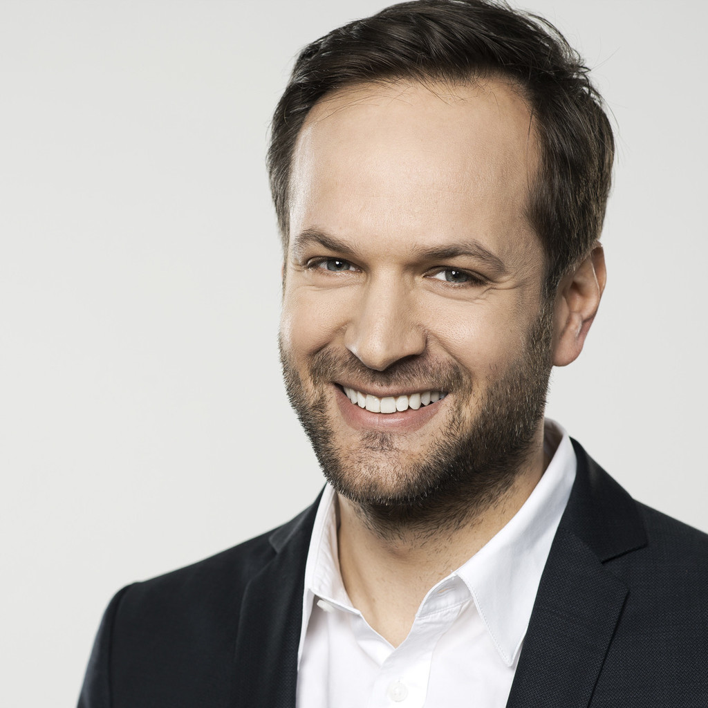

About
Welcome to the first edition of the Data Pioneers conference!
Extracting knowledge from data and using it to build data products as well as optimize industrial processes and business becomes more and more present and is inevitable to ensure competitiveness. The Data Pioneers 2018 conference provides a regional platform for data scientists to exchange experiences on how to successfully use data science, machine learning and artificial intelligence in industry and business. The conference offers a day of inspiring talks and the possibility to network with like-minded data scientists, data engineers and team leaders.
Data Pioneers is created because we truly believe that the Allgäu and the Vierländerregion Bodensee with the region around the Lake of Constance, Vorarlberg, St. Galler Rheintal, and Liechtenstein is an exciting area with established enterprises as well as aspiring startups working in a data-driven way or on data products. Our motivation is to create a stimulating event with real-world applications of predictive analytics, examples of crunching data on an industrial scale, and exchange on establishing a data-driven culture. Exciting talks should spark the imagination, the open culture should lead to discussions, and the mindset of the conference should make data pioneers ready to drive future innovations.
Talks: Data Pioneers 2018 provides high-profile talks from experienced regional data scientists. The topics cover data science, machine learning, and artificial intelligence in industrial and business relevant settings and applications. The final list of speakers is available in the speakers section.
Program: The conference is held on November 8th 2018, 9-17h. The program includes exciting key note presentations, in-depth data science talks, and lunch and coffee breaks for networking and inspiring exchanges on how to extract knowledge from data. The conference language is English.
Registration: The regular conference ticket is 75€, the student ticket is 25€. The ticket includes entrance to the conference, lunch and coffee breaks. Registration was closed on November 5.
Stay in touch and leave your contact details here to get regular updates!
Photos
Location
Allgäu Digital - Digitales Zentrum Schwaben, Keselstraße 16, 87435 Kempten (Allgäu)
Speakers
-

Between Dream and Reality - The Long Journey to AI
While DeepMind & others weekly release new and more spectecular results, is the German industry regarding AI still at the very beginning. We will examine examples on the subject to understand why >80% of the work depends on data determination and data preparation and clarify the big open questions regarding AI application.
Matthias Anderer (Matthias Anderer GmbH)
Innovation and Technology consultant Matthias Anderer supports the leading DAX and MDAX companies like Munich RE, as well as medium-sized companies around Munich. After his studies in aerospace technology (Dipl-Ing. TUM), he worked at Bain & Company (among others) and was part of the establishing team of the TechFounders Startup Program. With his focus on digitalization and artificial intelligence he supports his clients in all upcoming technical and scientific issues. Speaker's website
-
Boosting Assembly Lines with Machine Learning
A key challenge in running production lines efficiently is to detect bad parts early in the manufacturing process. Machine learning allows to predict the status of parts, but as bad ones are rare and misclassifying good ones is expensive, finding feasible models is hard. We present how we train and select profitable models to detect bad parts in our assembly processes and show the challenges we faced when dealing with imbalanced datasets from manufacturing lines.
Tobias Windisch (Robert Bosch GmbH)
Tobias is a python enthusiast working as data scientist at Robert Bosch GmbH. There, he builds machine learning pipelines to derive decisions from large datasets of manufacturing processes automatically. After obtaining his PhD in mathematics, he worked for Daimler TSS GmbH, a subsidiary of Daimler AG, where one of this tasks was to find anomalies in time series data of electric cars. Speaker's website
-
Application of Supervised Learning to Predict the Quality of a Welding Process
In industry end-of-life tests are necessary to verify that products operate reliably. Since it is not possible to test devices at real stress conditions, accelerated stress tests in combination with statistical models are commonly applied. In this study, data from a welding process, welding spatter data and lifetime data, are investigated. For the classification of welding spatters, decision trees, kNN, k-means and linear regression models are evaluated. For the prediction of product lifetime, linear regression models are analyzed and compared with neural network models.
Kathrin Plankensteiner (FH Vorarlberg, Forschungszentrum „Digital Factory Vorarlberg“)
Kathi studied technical mathematics and data analysis at the University of Klagenfurt, Austria. She received her PhD. in applied statistics in 2015. During her studies, she worked for KAI (Kompetenzzentrum Automobil- u. Industrieelektronik GmbH). Now she works as a Data Scientist at Julius Blum GmbH and as a research assistant at Digital Factory Vorarlberg, FH Vorarlberg. Her field of research includes reliability testing and analyzing, lifetime modeling, regression analysis, computational statistics, multivariate data analysis, statistical inference, machine learning. Speaker's website
-
Price Optimization: Applied Machine-Learning to drive business decisions
The talk guides through the challenges of applying decision-making algorithms based on machine learning to business processes by means of Price Optimization. In the context of Price Optimization accurate demand forecasts enable retailer to find prices according to their business strategy, consumer demand and market conditions. Forecasts for demand and price elasticities are regression tasks that can be addressed by supervised learning algorithms. On the one hand, rare events such as holidays, weather effects, promotions and trends evolving over time require special treatment. On the other hand, the particular use of the forecasts to actively steer prices imposes the substantial challenge to identify the casual effect of price changes to customers’ demand. That is why Data-Scientists involved in Price Optimization face problems that cover exciting parts across areas from statistical learning, discrete optimization, reinforcement learning and many more. A detailed view on these statistical challenges, many practical aspects and insights of the potential of these applications are provided within this talk.
Hannes Sieling (Blue Yonder GmbH)
Hannes is working as an expert data scientist at Blue Yonder in Hamburg, where he develops profound machine learning models for price optimization. From 2005 until 2010 he studied mathematical economics at the University of Göttingen and in 2013 he received his PhD in mathematical statistics for his research on 'Statistical Multiscale Segmentation: Inference, Algorithms and Applications'. Speaker's website
-

Driven Data Journalism: How data can change reporting
Like in many other industries, data driven insights play an ever more important role in journalism. Katharina Brunner will speak about some projects she has been working on at the Süddeutsche Zeitung, one of the largest and most important newspaper in the South of Germany. For example: How to get an idea of the blackbox Facebook? How has the German Parliament changed ever since the AfD entered the scene? And, most important, how to communicate the findings in a non-nerdy way?
Katharina Brunner (Süddeutsche Zeitung)
Katharina Brunner is part of the team Data and Digital Investigation at Süddeutsche Zeitung. There, she works at the intersection of traditional reporting, data analysis and data visualization. Speaker's website
-
Large-scale Machine Learning based Malware Detection
With the emergence of hundreds of thousands of new malware threats every day, the task of providing up-to-date virus definitions becomes increasingly challenging and traditional antivirus techniques alone are not sufficient anymore. In this session we talk about the challenges arising from this adversarial setting. We will then dive in and share some of Avira's decade-long experience in developing large-scale artificial intelligence based antivirus engines for the detection of malicious files.
Thomas Bühler (Avira Operations GmbH & Co. KG)
Thomas is an AI Researcher at Avira passionate about building large-scale Machine Learning systems for fighting threats in the cyber security space. His goal is to use the latest AI and ML techniques to ensure the best possible protection of Avira's customers. Before joining Avira, he was an academic researcher at Cluster of Excellence MMCI, working on algorithmic and theoretical foundations of Machine Learning. Thomas holds a Dr.rer.nat. and a M.Sc. in Computer Science from Saarland University. Speaker's website
-
Turning Measurements into Optimal Control Signals
The heart of sonnen’s products, such as the sonnenBatterie and the sonnenCharger, is to allow their users to optimize the consumption of their self-generated energy. In addition, these devices are also very well suited to offer flexibility to the energy market as they allow a quick and precise reaction to fluctuations of decentralized renewable energy sources. The sonnenBatterie and the sonnenCharger hence come with a charge control that ensures an optimal mix of savings by self-consumed energy and additional revenues from different flexibility markets and grid services. In this talk, I will show how predictions built from historic measurement data are turned into optimal control signals by means of Mathematical Programming.
Stefan König (sonnen GmbH)
Stefan, Manager Data Analytics at sonnen, can indeed be described as a data scientist of the first hour. At Blue Yonder he and his colleagues were among the first to combine scientific algorithms with state-of-the-art software development to take optimal, dynamic decisions for pricing and replenishment. In 2017 he joined sonnen for being able to contribute to a successful energy transition. At sonnen, Stefan and his team employ thorough scientific approaches to turn historic and live measurement data into optimal control signals for sonnenBatteries and sonnenChargers. Stefan holds a PhD in Mathematics from Technische Universität München where his research was concerned with tackling the complexity of high-dimensional optimization problems like they arise in his daily work today. Speaker's website
Schedule
| Time | Speaker | Description |
|---|---|---|
| 8:45 | Registration | |
| 9:15 | Welcome | |
| 9:30 |
Matthias Anderer
|
Between Dream and Reality - The Long Journey to AI Opening keynote |
| 10:30 | Coffee break | |
| 11:00 | Tobias Windisch | Boosting Assembly Lines with Machine Learning |
| 11:30 | Kathrin Plankensteiner | Application of Supervised Learning to Predict the Quality of a Welding Process |
| 12:00 | Lunch break | |
| 13:00 | Hannes Sieling | Price Optimization: Applied Machine-Learning to drive business decisions |
| 13:30 |
Katharina Brunner
|
Driven Data Journalism: How data can change reporting |
| 14:00 | Thomas Bühler | Large-scale Machine Learning based Malware Detection |
| 14:30 | Coffee break | |
| 15:00 | Stefan König | Turning Measurements into Optimal Control Signals Closing keynote |
| 16:00 | Final words | |
| 16:15 | Networking | |
| 17:30 | End of conference |
Organizers
-
Julia Ehrenmüller
Julia is an open-minded mathematician, passionate about machine learning, artificial intelligence and data driven business models. Very recently, she started her own business offering consultancy and implementation in the area of predictive modeling and artificial intelligence. Before that, Julia worked as a Data Scientist at Sixt SE and at Robert Bosch GmbH, where she and her colleagues employed data mining and machine learning to increase efficiency in manufacturing. She started her career as a researcher in the field of extremal combinatorics and probabilistic graph theory at TU München and TU Hamburg, from where she received her PhD in 2016. In November 2017, Julia initiated the meet-up Data Science Stammtisch Allgäu, which offers regular talks and networking possibilities for data science enthusiasts in the Allgäu region.
-
Manuel J. A. Eugster
Manuel is a data scientist by heart on the mission of turning data into insights. Currently he leads the Data Analytics & Insights unit at Avira. There he and his team develop data analytics solutions that transform massive amounts of (real-time) data from various sources into knowledge about customers and products. Prior to Avira, he was a scientific researcher at the Probabilistic Machine Learning group at HIIT, Aalto University in Finland and the Department of Statistics at LMU Munich. He worked, among other things, on next generation information retrieval systems using brain-computer interfaces. He holds a PhD in Statistics from LMU Munich, a MSc in Computational Intelligence and a BSc in Software and Information Engineering from TU Vienna.
-

Christian Dosch
Christian coordinates Allgäu Digital – Digitales Zentrum Schwaben as a project manager. Allgäu Digital is a startup center, incubator and network with the focus on digital business models situated in Kempten, Allgäu. After finishing his studies at the Hochschule der Medien in Stuttgart, he worked project-based for different film and media companies in Munich and Berlin and then passed his experience to other filmmakers as a Film Commissioner in Stuttgart Region. In 2016 he decided to move to the Westallgäu, became self-employed with the Spurfinder UG and nows stands up for putting rural areas on the map of digital transformation and innovation.
Partners


Contact
Allgäu Digital - Digitales Zentrum Schwaben (DZ.S)
Keselstraße 16
87435 Kempten (Allgäu)
Telephone: +49 831 57537 65 Email: team@datapioneers.tech Twitter: @TheDataPioneers